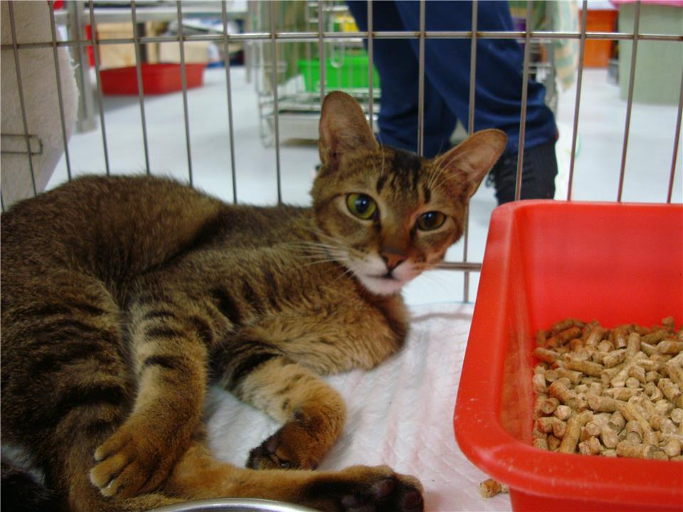
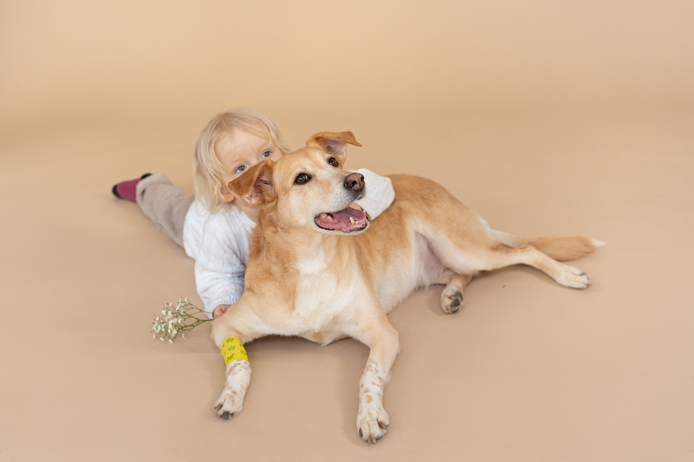

認養動物 狗 / 貓 中和區 / 成年 / 母 動物名稱:喵喵  板橋區 / 成年 / 母 動物名稱:小班 中和區 / 成年 / 母 動物名稱:小花 板橋區 / 成年 / 母 動物名稱:小黃 板橋區 / 成年 / 母 動物名稱:牛牛 板橋區 / 成年 / 公 動物名稱:小白
最新消息  新聞標題 新聞內容新聞內容新聞內容新聞內容新聞內容新聞內容新聞內容新聞內容新聞內容新聞內容新聞內容新聞內容新聞內容新聞內容新聞內容新聞內容，新聞內容新聞內容新聞內容新聞內容 新聞標題 新聞內容新聞內容新聞內容新聞內容新聞內容新聞內容新聞內容，新聞內容新聞內容新聞內容新聞內容 新聞標題 新聞內容新聞內容新聞內容新聞內容新聞內容新聞內容新聞內容，新聞內容新聞內容新聞內容新聞內容 新聞標題 新聞內容新聞內容新聞內容新聞內容新聞內容新聞內容新聞內容，新聞內容新聞內容新聞內容新聞內容 新聞標題 新聞內容新聞內容新聞內容新聞內容新聞內容新聞內容新聞內容，新聞內容新聞內容新聞內容新聞內容 新聞標題 新聞內容新聞內容新聞內容新聞內容新聞內容新聞內容新聞內容，新聞內容新聞內容新聞內容新聞內容